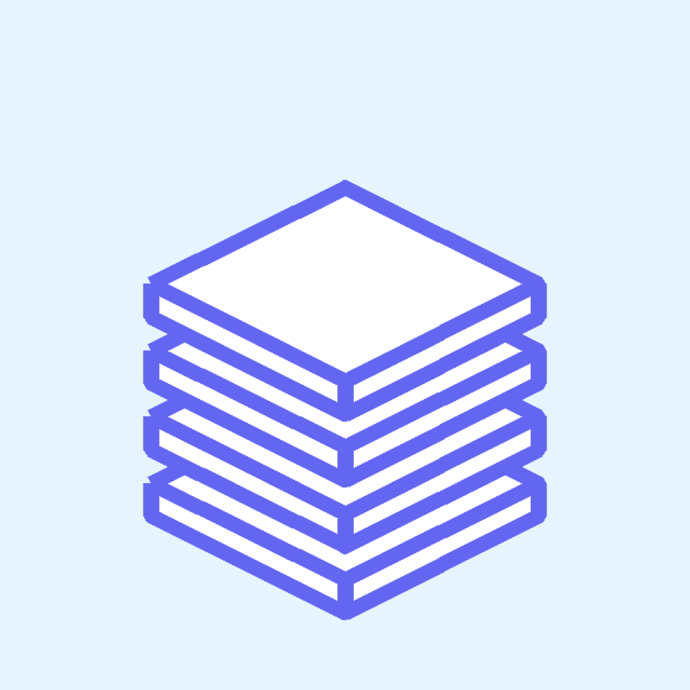
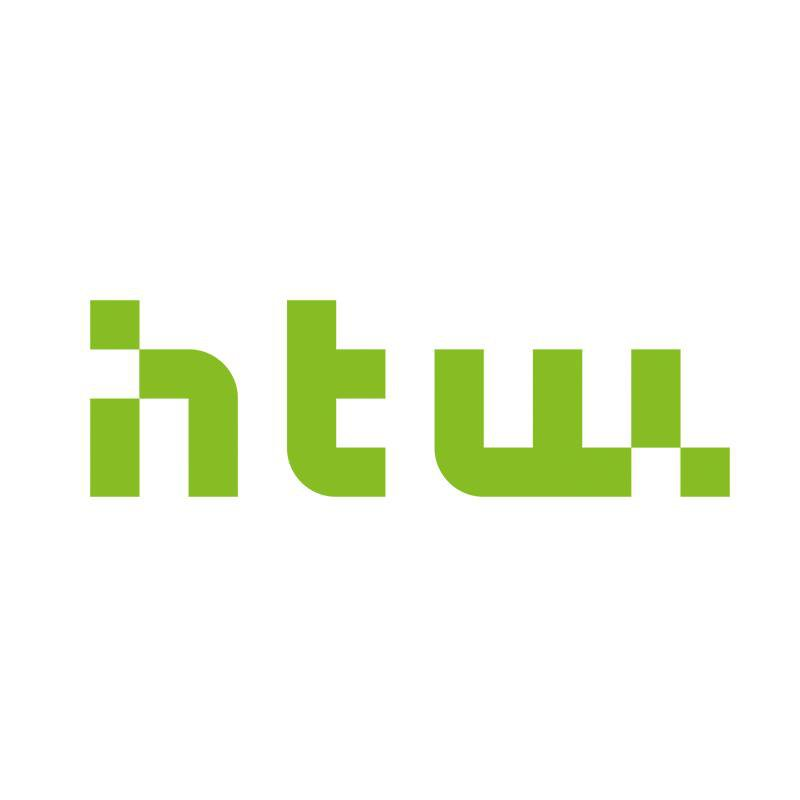
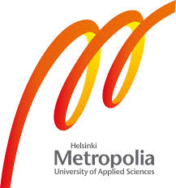
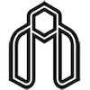
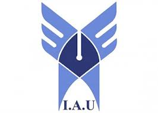

Building software that solves real-world problems.
I'm Mahdi, a software engineer based in Berlin. I build full-stack applications, backend systems, mobile products, and AI-powered workflows focused on usability, performance, and real-world impact.

About Me
I have a background in Computer Science and Construction & Real Estate Management. My work spans backend development, mobile applications, automation systems, performance optimization, and AI-assisted products. I enjoy taking ideas from concept to production, whether that's building APIs, designing user workflows, integrating external services, or improving reliability and scalability.
Featured Projects

FlewiLanguage learning platform built with React Native, FastAPI, PostgreSQL and Redis. Designed, developed and launched on the Apple App Store.
🎮 ft_transcendence
Real-time multiplayer platform featuring authentication, monitoring, observability, APIs and scalable backend services.
⚙️ Webserv
Built a non-blocking HTTP server in C++ supporting CGI, uploads, routing, concurrent connections and custom configuration.
🐚 Minishell
A miniature Unix shell replicating Bash — with lexing, parsing, pipes, redirections, environment handling and built-in commands.
🕹️ Cub3D
Wolfenstein-inspired raycasting FPS game with enemy AI, minimap, weapon system, textured environments and sliding doors.
🧠 Philosophers
The classic Dining Philosophers concurrency problem solved with threads and mutexes — no deadlocks, no race conditions, no starvation.
Tech Stack
Currently Exploring
AI agents, LLM-powered applications, scalable backend architectures, mobile product development, and automation systems that reduce manual work.
Education

Project-based computer science program focused on systems programming, backend development, and software engineering fundamentals.
- Developed applications in C/C++ with emphasis on memory management and performance
- Built network services and HTTP servers from scratch
- Implemented UNIX system-level programs using POSIX APIs
- Strengthened debugging, code review, and peer-to-peer collaboration skills
- Applied structured problem-solving in complex technical projects

Master's program focused on project management, risk assessment, and digital construction processes.
- Applied project lifecycle management and structured planning methodologies
- Developed WBS structures, scheduling plans, and feasibility studies
- Conducted risk assessments and budget tracking simulations
- Gained exposure to BIM and digital project coordination tools

Focused on international project management practices, sustainability, and digital construction methodologies.

Specialized in hydraulic systems modeling, analytical problem solving, and applied engineering mathematics.

Engineering foundation in structural analysis, materials science, and quantitative problem solving.